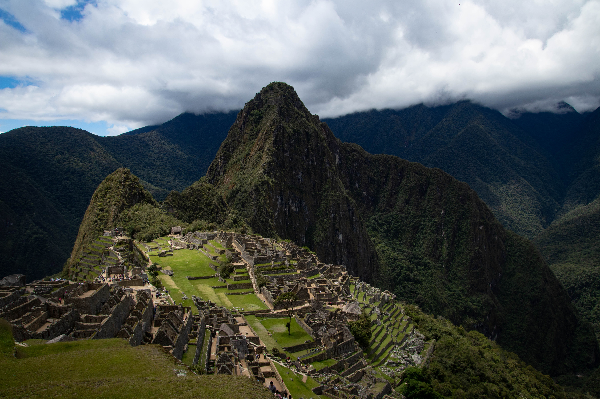
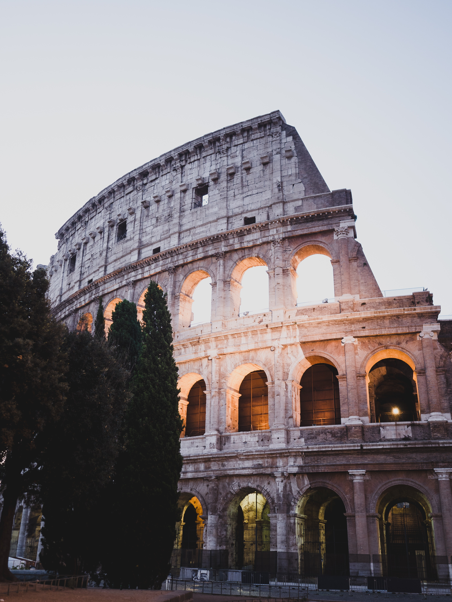

A ciudadela de Machu Picchu em Cusco, Peru
Descuberto em 1902 por Agustín Lizárraga e dado a conhecer ao mundo em 1911 por Hiram Bingham,
a ciudad “perdida” dos Incas foi construída em meados do século XV d.C. sob as ordens do Inca Pachacútec.
Este centro arqueológico não tem nome, Machu Picchu, a montanha onde está localizado, significa “Montanha Velha” em Quechua.

Chichen Itza na Península de Yucatan, México
Na língua maia, seu nome significa "Boca do Poço das Bruxas da Água" já que, de acordo com a crença daquela época,
o cenote sagrado servia como a entrada para o submundo
É uma pirâmide com uma série de terraços quadrados com escadas que sobem de cada um dos quatro lados
para o topo. Foi declarado Patrimônio da Humanidade pela UNESCO em 1988.

O Coliseu em Roma, Itália
Tinha sido originalmente chamado de Anfiteatro Flamengo e era o local de lutas de gladiadores,
entre outros espetáculos. Foi construído para abrigar mais de 50,000 espectadores.
Hoje é uma atração turística que atrai mais de 100.000 turistas à cidade da luz a cada ano.
